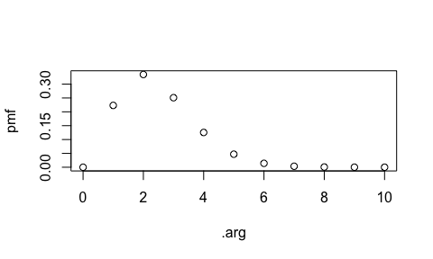
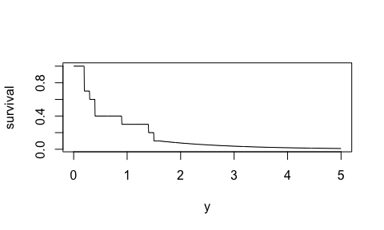
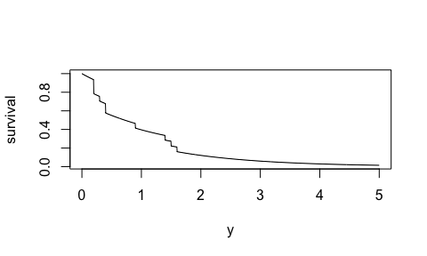

distplyr provides a grammar for manipulating (univariate) probability distributions, so that you can make probability distributions that realistically represent your data. Distributions add colour to your analysis: they show a complete picture of uncertainty.
Use distplyr to:
- start with distribution “building blocks” with the
dst_*()family of functions, and - manipulate these distributions using distplyr verbs.
The result is easy access to a wide range of distributions – more than just “elementary” distributions like a Normal or Poisson distribution.
distplyr sits on top of the distionary package, which provides a framework for creating distribution “building blocks” as well as evaluating distributions.
The distplyr package name is inspired by the dplyr R package: whereas distplyr provides a grammar for manipulating distributions, dplyr provides a grammar for manipulating data.
Installation
distplyr is not on CRAN yet, so the best way to install it is:
devtools::install_github("vincenzocoia/distplyr")Attaching the distplyr package with library(distplyr) also attaches the distionary package.
Basic Usage
Want to model a count variable that starts at 1, not 0? Consider shifting a Poisson distribution.
(d1 <- dst_pois(1.5) + 1)
#> [1] "shift" "dst"
#>
#> components :
#> $distribution
#> [1] "pois" "parametric" "dst"
#>
#> name :
#> [1] "pois"
#>
#> $shift
#> [1] 1Here’s its probability mass function:
enframe_pmf(d1, at = 0:10) %>%
plot()
Or, maybe you have positive continuous data and you’d like its tail to continue as an exponential distribution:
x <- c(1.6, 0.9, 0.2, 1.4, 0.4, 0.3, 0.2, 0.4, 0.2, 1.5)
mu <- mean(x)
(d2 <- dst_empirical(x) %>%
graft_right(dst_exp(mu), breakpoint = max(x)))
#> Mixture Distribution
#>
#> Components:
#> # A tibble: 2 × 4
#> distributions probs breakpoint include
#> <list> <dbl> <dbl> <lgl>
#> 1 <finite> 0.9 1.6 FALSE
#> 2 <slic_lft> 0.1 1.6 FALSEHere’s the survival function:
plot(d2, "survival", from = 0, to = 5, n = 1000)
Or maybe you’d like to mix the empirical and Exponential distributions:
(d4 <- mix(dst_empirical(x), dst_exp(mu)))
#> Mixture Distribution
#>
#> Components:
#> # A tibble: 2 × 2
#> distributions probs
#> <list> <dbl>
#> 1 <finite> 0.5
#> 2 <exp> 0.5
plot(d4, "survival", from = 0, to = 5, n = 1000)
distplyr in Context
There are a few other R packages that handle probability distributions. The key differentiator with distplyr is its grammar, and the flexibility of the package distionary, which distplyr sits on top of.
Some examples:
- The distributional package also allows for distribution manipulation, but is less flexible, and builds vectorization into the package. distplyr (and distionary) deliberately leaves vectorization up to the user, since distributions can be evaluated to produce a variety of output types.
- Development of distributional appears to have happened at the same time as distplyr, and distributional uses a similar family of functions –
dist_*()– to make probability distributions.
- Development of distributional appears to have happened at the same time as distplyr, and distributional uses a similar family of functions –
- The distr package allows you to make distributions including empirical ones, and transform them, using S4 classes, but the interface is complex. distplyr aims to provide a human-centric interface by providing a grammar.
Please note that the ‘distplyr’ project is released with a Contributor Code of Conduct. By contributing to this project, you agree to abide by its terms.